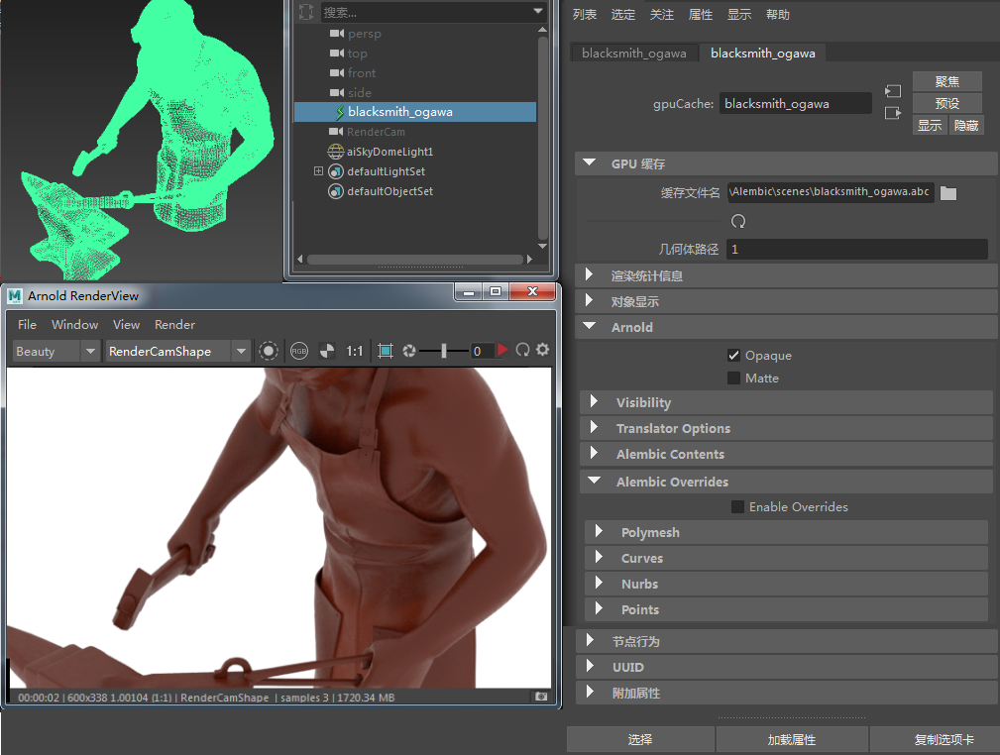
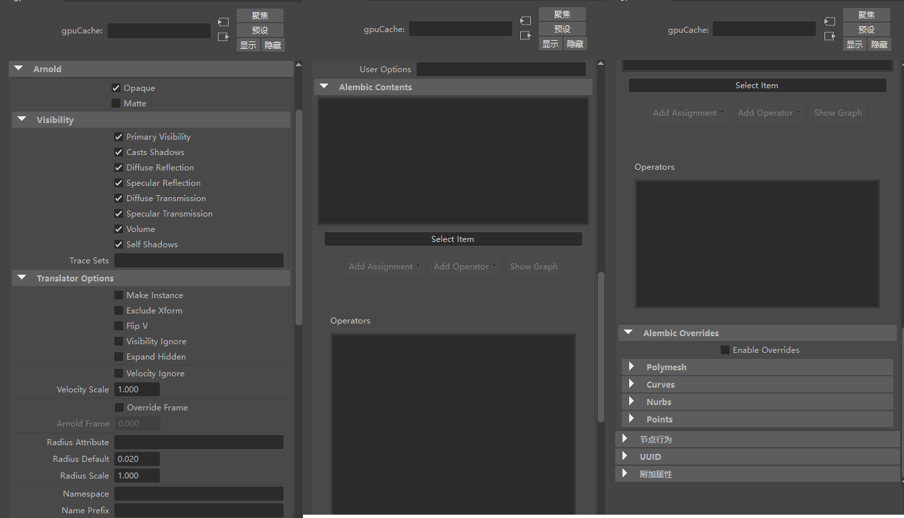
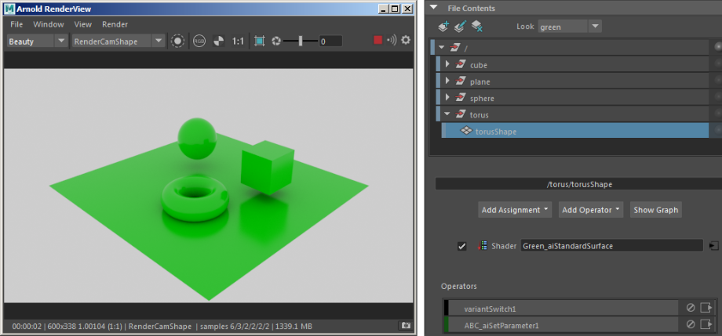
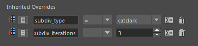
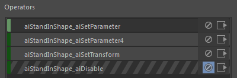
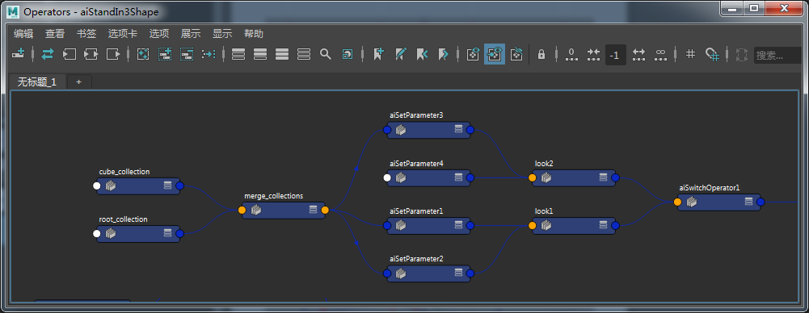

| 延伸阅读 |
|---|
| 有关 Arnold 形状和形状参数的完整文档，请参见《Arnold 用户手册》中的形状。 |

在 MtoA 中渲染的 Alembic (.abc) 文件
可用于读取 Alembic 文件的程序节点。MtoA 通过 Maya 的流水线缓存工作流来支持 Alembic (.abc) 文件。有关 Arnold 特定属性的信息，请参见下文。

Alembic GPU 缓存中的 Arnold 属性
有关 Arnold 可见性属性的信息，请单击此处。
选择要在 Alembic 文件中显示的对象（更改“几何体路径”(Geometry Path)）。内容列表会保存至 gpuCache 的缓存属性，因此，无需时时读取 .abc 文件。
在属性编辑器中显示文件的内容，并允许您对所选项目应用覆盖。
| 提供了一个场景文件，演示如何对 .abc 文件使用运算符和赋值。 |
|---|
选择创建、编辑或删除外观变体。创建新外观*时，会自动添加一个 *aiLookSwitch 节点，该节点是 switch_operator 和 merge 的组合并连接到程序图的根。处理第一个外观时，当前运算符将移动到变体切换节点上的第一个输入列表。aiLookSwitch 中的标签用于填充 aiStandIn 中的菜单。可以通过“渲染设定”(Render Setup)工具（用于按层/通道添加不同外观）来设置/覆盖此栓。名称/外观/通道将转换为索引编号以进行渲染。

应用“绿色”外观
参数列表，可以指定给其中的对象。它可以用于向节点的子对象添加属性和参数赋值。它可为每个选择创建一个设置参数(Set Parameter)节点，并将其按顺序放在运算符(Operators)列表中。顶部是第一个运算符，层次中的最后一个叶是该列表中的最后一个运算符。
层次中节点上的赋值。
影响下面的对象或匹配字符串表达式选择的覆盖。

使用最左侧按钮创建的继承赋值
向图表中的点添加常规运算符。选择字符串必须引用 .ass 文件中的节点。

“运算符”列表
显示形状和与之相连的任何*运算符*的独立图表。

有关常见 Arnold 形状设置的信息，请单击此处。
如果要将参数传递到所创建的形状，声明用户数据时请使用与参数相同的类型，并以形状名称和冒号 (:) 为前缀。例如，使用
pull_user_params on
declare polymesh:step_size constant FLOAT
polymesh:step_size 0.1